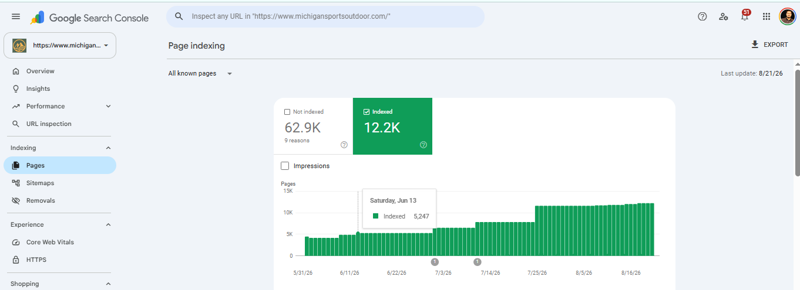
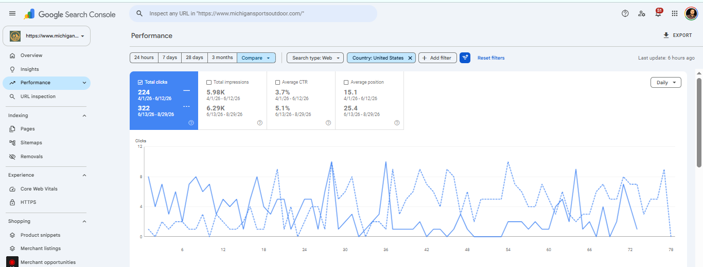
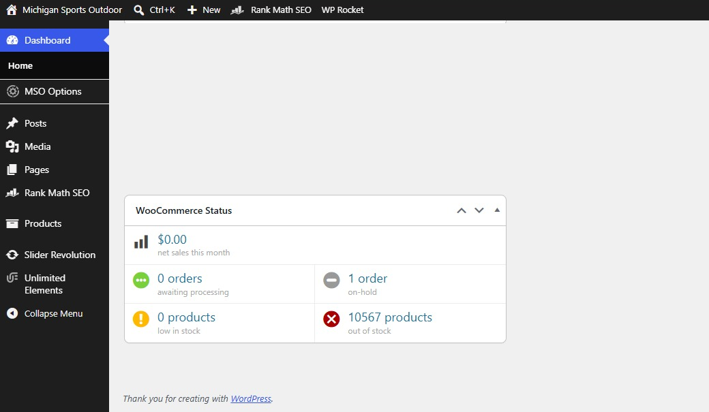
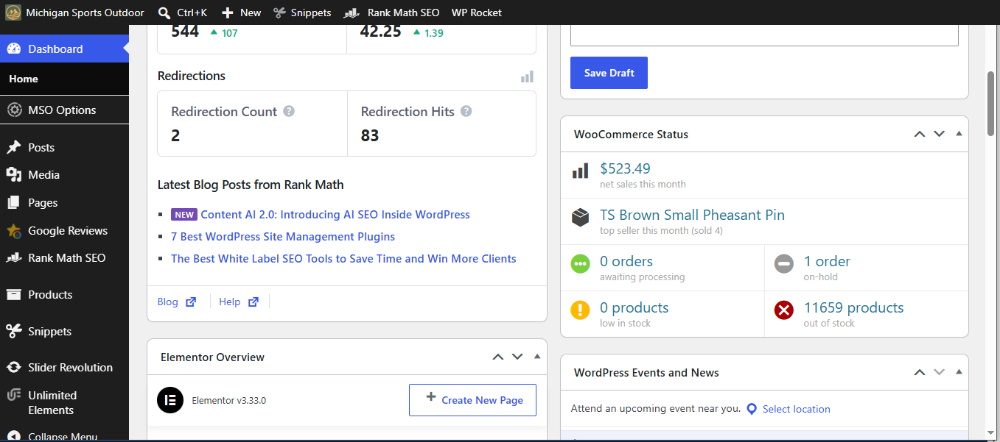

The Outcome: 12,200 Re-Indexed URLs & Daily Order Dispatch Resumption
Michigan Sports & Outdoor engaged Mubashar Sharif as Senior SEO Analyst to break an algorithmic de-indexing suppression loop affecting over 8,000 outdoor gear and knife products. Within 90 days, Search Console verified 12,200 active indexed URLs, US search CTR rose from 3.7% to 5.1%, and daily commercial order packing was restored.
- Reclaimed 12,200 indexed URLs in Google Search Console, climbing from a sub-4,000 suppression cliff.
- US organic click-through rate jumped from 3.7% to 5.1% across high-intent brand commercial searches.
- WooCommerce net revenue rebounded from $0.00/mo flatline to active daily packaging and carrier dispatch.
- Closed organic visibility gaps against major established national retailers like Blade HQ and KnifeCenter.
The Challenge: Algorithmic De-Indexing Cliff & Crippling Crawl Waste
As an independent retailer carrying thousands of specialized hunting, tactical, and outdoor SKUs, Michigan Sports & Outdoor faced sudden algorithmic suppression from Google's core updates, causing their organic search traffic to collapse.
- Crawl Budget Starvation on Low-Value URLs: Googlebot was wasting crawl allocations on duplicate faceted filters, sorting parameters, and pagination dead-ends.
- Wholesale Supplier Boilerplate Duplication: Thousands of SKUs shared unedited manufacturer product descriptions copied verbatim from distributors, triggering Google's thin-content filters.
- Severed Taxonomy & Broken Internal Link Flow: Top revenue-generating brands (Boker, Microtech, Kershaw) were buried 5 to 7 clicks deep from the home page.
- Zero Structured Data: Lacked Product, Offer, and AggregateRating JSON-LD schema, rendering catalog items invisible to Google Shopping feeds and AI answer engines.
The Strategy: 5-Phase Programmatic Content Autopilot & Technical Overhaul
A comprehensive e-commerce engineering sprint combining custom algorithmic content enrichment with deep technical crawl optimization to systematically revive the 12,000+ URL catalog.
Crawl Budget Reclamation & XML Hierarchy Restructuring
Eliminated server crawl bottlenecks by stripping parameter URLs, fixing canonical loop errors, and rebuilding sitemaps into segmented 1,000-URL clusters.
- Configured strict robots.txt disallow rules for sorting parameters and checkout sessions.
- Rebuilt segmented XML sitemaps and submitted them directly via Google Search Console API.
- Resolved soft 404s and established 301 redirects for discontinued inventory to preserve equity.
Mubashar Sharif Programmatic Content Autopilot Deployment
Engineered a custom programmatic publishing engine that ingested raw product data and generated unique, conversion-optimized copy for thousands of thin catalog SKUs.
- Programmatically enriched every SKU with blade steel specifications, handle ergonomics, and specific outdoor use-cases.
- Generated dynamic, search-intent FAQs on product templates answering buyer questions before purchase.
- Rolled out updates in disciplined 250-page batches to measure Googlebot re-crawl response before subsequent releases.
High-Intent Brand Hub Silo Architecture
Created high-authority brand landing hubs for priority manufacturers to organize crawl paths and establish topical dominance across outdoor equipment categories.
- Architected dedicated brand index pages for top lines (Boker, Microtech, Joker Bushcraft, Douk-Douk).
- Implemented automated contextual breadcrumbs and cross-product recommendation grids.
- Shortened click-depth so every product is accessible within 3 clicks of the root domain.
Enterprise Schema.org JSON-LD Rich Data Integration
Embedded comprehensive schema markup directly into the WooCommerce template layer to qualify pages for Google Merchant features and AI answer engines.
- Injected complete Product, Offer, InStock, PriceSpecification, and Brand JSON-LD schemas.
- Verified schema compliance with Google Rich Results Test to secure pricing and inventory SERP badges.
- Structured product specifications to feed directly into Google's shopping graph and AI Overviews.
Search Console API Monitoring & Iterative Index Verification
Set up real-time telemetry to track Googlebot crawl frequency, validate indexation status, and immediately resolve any validation warnings.
- Automated daily indexing telemetry polling the Google Search Console URL Inspection API.
- Tracked impression velocity and keyword position shifts across Midwest outdoor buyer queries.
- Continuously tuned internal anchor text to boost pages ranking on the threshold of page one.
Before vs After Reality Matrix
Direct comparison of metrics before and after the SEO Autopilot deployment.
| Measured Dimension | Before (May Baseline) | After (August Final) | Growth Delta |
|---|---|---|---|
| Indexed Catalog URLs | ~4,000 pages (De-Indexing Cliff) | 12,200 indexed URLs in GSC | +205% Re-Index Recovery |
| US Organic Search Clicks | 224 clicks (Apr 1 – Jun 12) | 322 clicks (Jun 13 – Aug 29) | +43.7% Traffic Lift |
| Organic Click-Through Rate | 3.7% Average CTR | 5.1% Average CTR | +37.8% Search Intent CTR |
| WooCommerce Net Sales | $0.00 / month (July 20 flatline) | $523.49 MTD (Sep 25) | Daily Fulfillment Resumed |
Google Search Console & Revenue Captures
Click any screenshot to inspect the official GSC data in full resolution.




Actionable Technical SEO Lessons
Supplier Boilerplate is Algorithmic Poison
Copy-pasting manufacturer product descriptions causes Google to flag thousands of URLs as thin or duplicate content, wasting crawl budget.
Crawl Budget Optimization Unlocks Indexing
Pruning low-value parameter URLs and directly submitting segmented XML sitemaps forces Googlebot to spend visits on pages that sell.
Programmatic Copy Beats Manual Rewriting
When dealing with 10K+ catalogs, automated programmatic enhancement is the only scalable way to provide unique intent signals on every SKU.